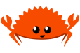

About me
Ever since I was young, I've been fascinated by how technology can be used to solve real-world problems. This curiosity grew into a passion, which I formalized by earning my Associate of Applied Science degree from Northwest Mississippi Community College. I then gained hands-on experience and a professional certification at the nonprofit Base Camp Coding Academy in Water Valley, Mississippi. I'm now eager to apply the skills and dedication I've cultivated to a professional software development role.
Skills
Technical Skills
- Python stuff
- JavaScript stuff
-  Rust stuff
- Video Game Development: Experience building both 2D and 3D games and simulations using the **Godot** engine.
- Procurement and Teamwork: Managed a weekly budget for my team to shop for and prepare meals, which developed strong teamwork and budget management skills.